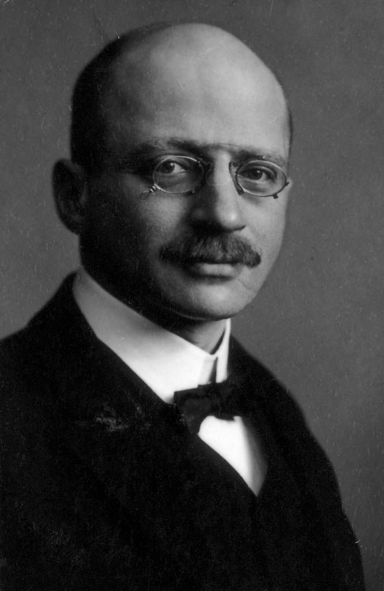

SumberFRITZ HABER adalah kimiawan Jerman yang dikenal atas kontribusinya yang besar dalam bidang kimia dan teknologi, terutama dalam pengembangan proses Haber-Bosch untuk sintesis amonia, yang sangat penting dalam industri pupuk. Namun, warisannya juga tercemar oleh peranannya dalam pengembangan senjata kimia selama Perang Dunia I.
Nama Lengkap: Fritz Haber Lahir: 9 Desember 1868, Breslau, Kerajaan Prusia (sekarang Wrocław, Polandia) Meninggal: 29 Januari 1934, Basel, Swiss Jabatan: Kimiawan dan profesor universitas Penghargaan: Hadiah Nobel Kimia (1918) Kontribusi Terbesar: Proses Haber-Bosch, pengembangan senjata kimia selama Perang Dunia I
Haber lahir dalam keluarga Yahudi di Jerman dan mengenyam pendidikan di Universitas Heidelberg dan Universitas Karlsruhe, di mana ia memperoleh gelar doktor dalam kimia. Setelah menyelesaikan pendidikannya, ia bekerja di beberapa institusi ilmiah sebelum menjadi profesor di Universitas Karlsruhe dan akhirnya di Universitas Berlin.
1. Proses Haber-Bosch (1909) Haber terkenal karena menemukan proses sintesis amonia yang dikenal sebagai Proses Haber-Bosch, yang memungkinkan produksi amonia dalam jumlah besar dengan menggabungkan hidrogen dan nitrogen dari udara pada suhu tinggi dan tekanan tinggi menggunakan katalis. Penemuan ini memiliki dampak besar dalam industri pupuk, memungkinkan peningkatan produksi pangan di seluruh dunia dan membantu mengatasi kelaparan global. Proses ini menjadi dasar bagi pembuatan pupuk nitrogen dan bahan kimia penting lainnya. Pada tahun 1918, ia dianugerahi Hadiah Nobel Kimia atas penemuan ini. 2. Senjata Kimia dalam Perang Dunia I Selama Perang Dunia I, Haber memainkan peran kunci dalam pengembangan senjata kimia untuk tentara Jerman, khususnya penggunaan gas beracun seperti gas klorin dan gas mustard. Ia mendirikan laboratorium senjata kimia di Jerman dan memimpin upaya untuk memproduksi dan menggunakan gas beracun di medan perang, yang menyebabkan banyak korban jiwa dan luka-luka. Meskipun kontribusinya dalam kimia industri sangat dihargai, keterlibatannya dalam senjata kimia menciptakan warisan yang sangat kontroversial.
Haber's kehidupan pribadi juga penuh dengan kontroversi. Ia menikah dengan Clara Immerwahr, seorang kimiawan dan aktivis perdamaian, yang sangat menentang penggunaan senjata kimia. Clara meninggal dalam bunuh diri pada 1915, yang diduga terkait dengan ketegangan dalam hubungan mereka dan penentangannya terhadap pekerjaan suaminya dalam mengembangkan senjata kimia. Setelah perang, akibat peranannya dalam senjata kimia, ia menghadapi kecaman dari banyak pihak, meskipun tetap diakui sebagai ilmuwan besar.
Setelah Perang Dunia I, Jerman kalah, dan politik pasca-perang membuat kondisi hidup Haber's semakin sulit. Setelah kekalahan Jerman pada Perang Dunia I, dan dengan naiknya nazisme, Haber yang beragama Yahudi menghadapi persekusi. Ia meninggalkan Jerman pada 1933 setelah kebijakan rasialis Nazi mulai diberlakukan. Haber pindah ke Swiss, tetapi tidak lama kemudian meninggal pada 29 Januari 1934 akibat komplikasi penyakit jantung.
✅ Dampak Positif: Proses Haber-Bosch memungkinkan produksi massal pupuk nitrogen, yang meningkatkan hasil pertanian dunia dan membantu mengurangi kelaparan. Penemuan ini juga mendasari produksi bahan kimia lainnya yang penting bagi industri modern. ❌ Dampak Negatif: Keterlibatannya dalam pengembangan senjata kimia selama Perang Dunia I membuatnya menjadi tokoh kontroversial. Penggunaan gas beracun dalam perang mengakibatkan kerusakan besar dan banyak korban. Penemuannya, meskipun bermanfaat bagi pertanian, juga memberikan kontribusi terhadap populasi dunia yang terus berkembang, yang membawa dampak lingkungan dan masalah keberlanjutan. Fritz Haber dikenal sebagai "Bapak Kimia Industri", namun warisannya sangat terbagi antara kontribusinya dalam sains dan keterlibatannya dalam kekejaman perang.